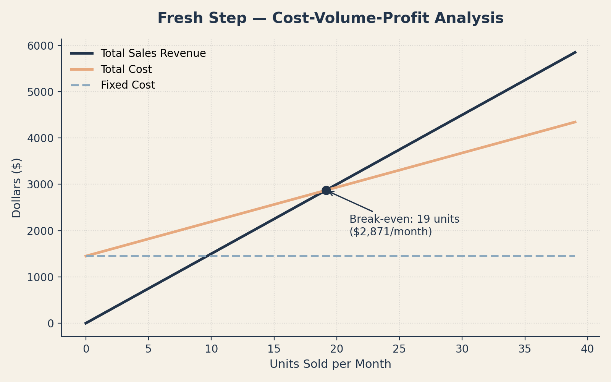

Fresh Step
A Shark Tank-style class project: pitch a product, then back it up with a full cost, pricing, and break-even analysis. My team's product was a portable shoe-washing machine.

What It Was
For this class project, my team pitched a fictional product — Fresh Step, a portable washer and dryer built specifically for shoes — and then had to prove the idea could actually work as a business. That meant writing an executive summary, product and marketing sections, and an operations plan, then building a full cost worksheet: variable material costs, variable labor costs, fixed costs, contribution margin, a break-even calculation, and a CVP (cost-volume-profit) graph.
What I Want You to Notice
I want the numbers and the analysis to speak louder than the graphic here. This project shows I can go beyond the marketing pitch and actually build out real pricing and break-even math — the kind of financial thinking a marketing hire also needs to be useful in the room.
What I'd do differently: we'd market Fresh Step to a wider group of people. Our plan leaned on a fairly narrow target customer — I'd broaden that reach.
The Cost & Pricing Breakdown
Fixed costs ran $1,450 a month — rent, utilities, insurance, and equipment. With a contribution margin of $75.75 per unit, Fresh Step would need to sell about 19 units a month just to break even, or roughly $2,871 in monthly revenue.

Market & Competition
We positioned Fresh Step for younger consumers who care about keeping sneakers clean without the cost of replacing them — with potential markets in homes, college dorms, sports team locker rooms, and hotels.
| Product | Price | How Fresh Step compares |
|---|---|---|
| Fresh Step | $150 | Our product |
| Life Changing Products — Shoe Washer | $350 | $200 more for a comparable machine |
| Walmart — Shoe Washing Bag | $15.99 | Cheaper, but risks damaging shoes when thrown in a regular washer |